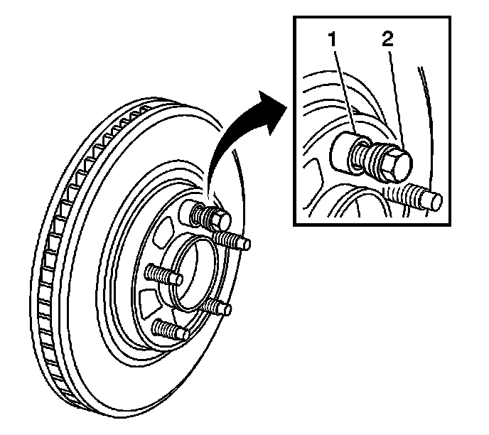
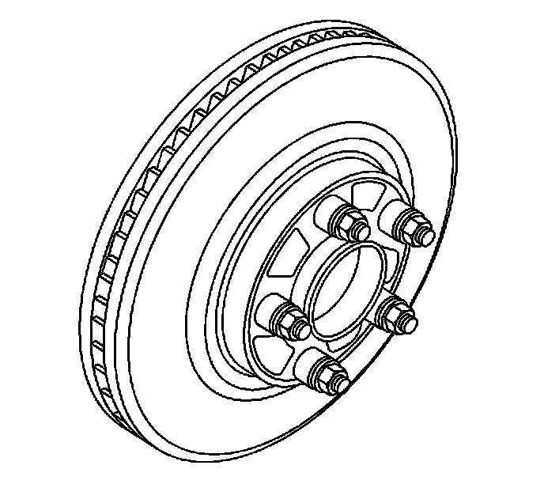
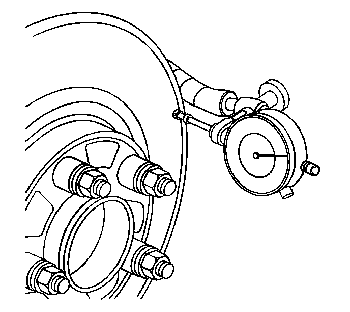

Brake Rotor Assembled Lateral Runout Measurement
Brake Rotor Assembled Lateral Runout Measurement
Tools Required
^ J 39544-KIT Torque-Limiting Socket Set, or equivalent
^ J 41013 Rotor Resurfacing Kit
^ J 42450-A Wheel Hub Resurfacing Kit
^ J 45101 Hub and Wheel Runout Gage
^ J 45101-100 Conical Brake Rotor Washers
Caution: Refer to Brake Dust Caution.
Important:
^ Brake rotor assembled lateral runout (LRO) exceeding the maximum allowable specification can cause thickness variation to develop in the brake rotor over time, usually between 4,800-11,300 km (3,000-7,000 mi).
^ Brake rotor thickness variation MUST be checked BEFORE checking for assembled lateral runout (LRO). Thickness variation exceeding the maximum acceptable level can cause brake pulsation. Refer to Brake Rotor Thickness Variation Measurement. Brake Rotor Thickness Variation Measurement
1. Matchmark the position of the brake rotor to the wheel studs if this has not been done already.
Important: Whenever the brake rotor has been separated from the hub/axle flange, any rust or contaminants should be cleaned from the hub/axle flange and the brake rotor mating surfaces. Failure to do this may result in excessive assembled lateral runout (LRO) of the brake rotor, which could lead to brake pulsation.
2. Inspect the mating surface of the hub/axle flange and the brake rotor to ensure that there are no foreign particles, corrosion, rust, or debris remaining. If the wheel hub/axle flange and/or if the brake rotor mating surfaces exhibit these conditions, perform the following steps:
1. Remove the brake rotor from the vehicle.
2. Using the J 42450-A, thoroughly clean any rust or corrosion from the mating surface of the hub/axle flange.
3. Using the J 41013, thoroughly clean any rust or corrosion from the mating surface of the brake rotor.
4. Clean the friction surfaces of the brake rotor with denatured alcohol, or an equivalent approved brake cleaner.
3. Install the rotor to the hub/axle flange using the matchmark made prior to removal.

4. Hold the rotor firmly in place against the hub/axle flange and install one of the J 45101-100 (1), and one lug nut (2) onto the upper-most wheel stud.
5. Continue to hold the rotor secure and tighten the lug nut firmly by hand.

6. Install the remaining J 45101-100 and lug nuts onto the wheel studs and tighten the nuts firmly by hand in a star-pattern.
7. Using the J 39544-KIT, or equivalent, tighten the lug nuts in a star-pattern to specification, in order to properly secure the rotor.
8. If the brake rotor has been REFINISHED or REPLACED with a new rotor, proceed to step 14.
9. If the brake rotor meets the following criteria, proceed to step 10.
^ The rotor is within specifications and is being REUSED
^ The rotor has NOT been refinished
^ The rotor does NOT exhibit thickness variation exceeding the maximum allowable level

10. Mount a dial indicator, J 45101, or equivalent, to the steering knuckle and position the indicator button so it contacts the brake rotor friction surface at a 90 degree angle, approximately 13 mm (0.5 in) from the outer edge of the rotor.
11. Measure and record the assembled LRO of the brake rotor.
1. Rotate the rotor until the lowest reading is displayed on the indicator dial, then set the dial to zero.
2. Rotate the rotor until the highest reading is displayed on the dial.
3. Mark the location of the high spot relative to the nearest wheel stud, or studs.
4. Measure and record the amount of LRO.
12. Compare the brake rotor assembled LRO to the following specifications:
Brake rotor maximum allowable assembled lateral runout: 0.13 mm (0.005 in)
Brake rotor maximum allowable assembled lateral runout: 0.25 mm (0.010 in)
13. If the brake rotor assembled LRO is within specifications, proceed to step 18.
If the brake rotor assembled LRO exceeds the specification, refinish the rotor to ensure true parallelism, refer to Brake Rotor Refinishing. After refinishing the rotor, proceed to step 14.
14. Mount a dial indicator, J 45101, or equivalent, to the steering knuckle and position the indicator button so it contacts the brake rotor friction surface at a 90 degree angle, approximately 13 mm (0.5 in) from the outer edge of the rotor.
15. Measure and record the assembled LRO of the brake rotor.
1. Rotate the rotor until the lowest reading is displayed on the indicator dial, then set the dial to zero.
2. Rotate the rotor until the highest reading is displayed on the dial.
3. Mark the location of the high spot relative to the nearest wheel stud, or studs.
4. Measure and record the amount of LRO.
16. Compare the brake rotor assembled LRO to the following specification:
Brake rotor maximum allowable assembled lateral runout: 0.13 mm (0.005 in)
Brake rotor maximum allowable assembled lateral runout: 0.25 mm (0.010 in)
17. If the brake rotor assembled LRO measurement exceeds the specification, bring the LRO to within specifications. Refer to Brake Rotor Assembled Lateral Runout Correction. Service and Repair
18. If the brake rotor assembled LRO measurement is within specification, install the brake caliper and depress the brake pedal several times to secure the rotor in place before removing the J 45101-100 and the lug nuts.